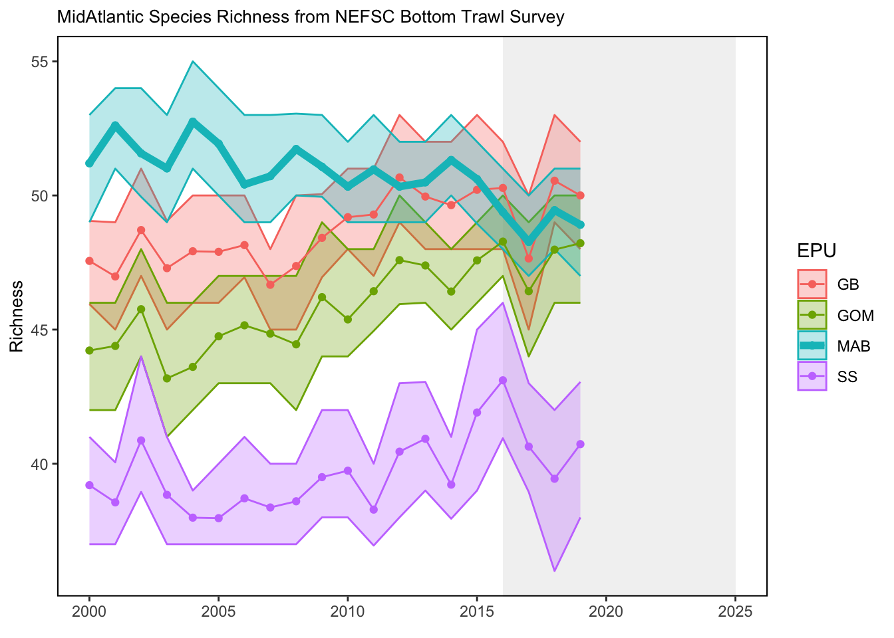
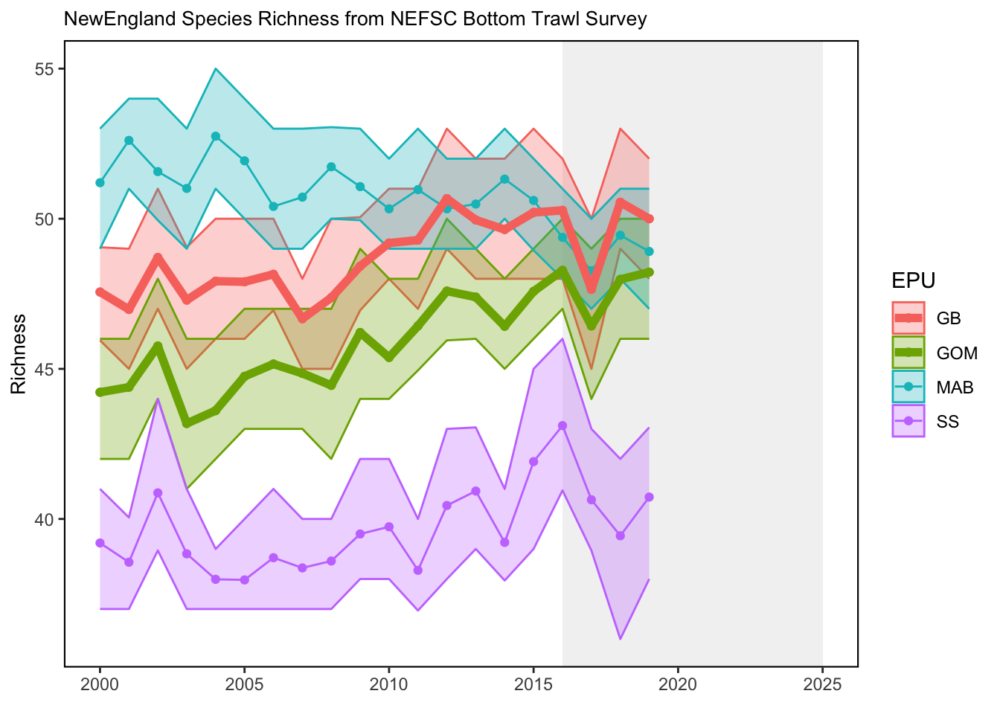

SMART Indicator Report: Species Richness
2 Indicator name
Species Richness
Includes variable(s): lower-Richness, mean-Richness, median-Richness, Shannon, upper-Richness
3 Indicator brief description
Species richness is the number of unique species predicted to be captured in NEFSC bottom trawl survey tows, conducted within each of four ecological production units (EPUs) in each year between 2000 and 2019. This is based on simulations from a joint-species distribution model fitted to presence-absence data for 55 species routinely collected by spring and fall surveys during the corresponding time period. Vessel-specific differences in capture efficiency are estimated by the model, and then predictions are generated at the Albatross IV scale. See SOE Tech Doc for details of the model, species considered, and environmental covariates included.
4 Indicator visualization
An overall trend of declining richness can be seen in the more southerly Mid-Atlantic Bight (MAB) region during the modeled time period (2000-2019), while the more northerly regions (i.e., the Gulf of Maine and Georges Bank) are characterized by concurrent gains in richness. These patterns reflect the increasingly rare occurrence of cooler-water species (e.g., Atlantic cod, American plaice, and Atlantic pollock) in southern waters and the growing prevalence of warmer-water species (e.g., weakfish, spotted hake, and black sea bass) in the north, likely as a direct result of warming ocean temperatures.

5 Indicator documentation
5.1 Are indicators available for others to use (data downloadable)?
Yes
5.1.1 Where can indicators be found?
Data: https://noaa-edab.github.io/ecodata/index.html
Description: https://noaa-edab.github.io/catalog/habitat_diversity.html
Technical documentation: https://noaa-edab.github.io/tech-doc/habitat_diversity.html
5.1.2 How often are they updated? Are future updates likely?
[need sequential look at datasets for update frequency. Future requires judgement]
5.1.3 Who is the contact?
Chris Haak (chrishaak@gmail.com)
5.2 Gather indicator statistics
5.2.1 Units
Indicator | Units |
|---|---|
lower-Richness | no Units field |
mean-Richness | no Units field |
median-Richness | no Units field |
Shannon | no Units field |
upper-Richness | no Units field |
5.2.2 Length of time series, start and end date, periodicity
General overview: Spring (March-May) and fall (September-November) NEFSC bottom trawl surveys from 2000-2019
Indicator specifics:
Indicator | EPU | StartYear | EndYear | NumYears | MissingYears |
|---|---|---|---|---|---|
lower-Richness | GB | 2000 | 2019 | 20 | 0 |
lower-Richness | GOM | 2000 | 2019 | 20 | 0 |
lower-Richness | MAB | 2000 | 2019 | 20 | 0 |
lower-Richness | SS | 2000 | 2019 | 20 | 0 |
mean-Richness | GB | 2000 | 2019 | 20 | 0 |
mean-Richness | GOM | 2000 | 2019 | 20 | 0 |
mean-Richness | MAB | 2000 | 2019 | 20 | 0 |
mean-Richness | SS | 2000 | 2019 | 20 | 0 |
median-Richness | GB | 2000 | 2019 | 20 | 0 |
median-Richness | GOM | 2000 | 2019 | 20 | 0 |
median-Richness | MAB | 2000 | 2019 | 20 | 0 |
median-Richness | SS | 2000 | 2019 | 20 | 0 |
Shannon | GB | 2000 | 2019 | 20 | 0 |
Shannon | GOM | 2000 | 2019 | 20 | 0 |
Shannon | MAB | 2000 | 2019 | 20 | 0 |
Shannon | SS | 2000 | 2019 | 20 | 0 |
upper-Richness | GB | 2000 | 2019 | 20 | 0 |
upper-Richness | GOM | 2000 | 2019 | 20 | 0 |
upper-Richness | MAB | 2000 | 2019 | 20 | 0 |
upper-Richness | SS | 2000 | 2019 | 20 | 0 |
5.2.3 Spatial location, scale and extent
General overview: Ecological production units (4) on the Northeast US continental shelf (as sampled by NEFSC spring and fall bottom trawl surveys)
Indicator specifics:
Indicator | EPU |
|---|---|
lower-Richness | GB |
lower-Richness | GOM |
lower-Richness | MAB |
lower-Richness | SS |
mean-Richness | GB |
mean-Richness | GOM |
mean-Richness | MAB |
mean-Richness | SS |
median-Richness | GB |
median-Richness | GOM |
median-Richness | MAB |
median-Richness | SS |
Shannon | GB |
Shannon | GOM |
Shannon | MAB |
Shannon | SS |
upper-Richness | GB |
upper-Richness | GOM |
upper-Richness | MAB |
upper-Richness | SS |
5.3 Are methods clearly documented to obtain source data and calculate indicators?
Yes
5.3.1 Can the indicator be calculated from current documentation?
Estimated species richness is the number of unique species expected to be observed in NEFSC bottom trawl surveys conducted in a given ecological production unit (EPU) and year, based on a fitted joint-species distribution/habitat suitability model (considering only the 55 commonly-occurring species listed above). A spatiotemporal joint species distribution model was fitted to n=13231 observations of presence/absence in the Spring and Fall NEFSC bottom trawl surveys for the years 2000-2019, using the Community Level Basis Function Model (CBFM) framework with a binomial error distribution and logistic link function. The probability of presence was modeled as a function of environmental predictor variables (using smooth terms), a vessel effect (factor) to account for changes in sampling gear, as well as spatiotemporal (Lat, Lon, Month) and temporal (Year) random effects, which were estimated hierarchically through a set of species-common basis functions. The model thus controls for differences in capture efficiency across survey vessels, permitting predictions on a common scale (here calibrated to the RFV Albatross IV). Covariate values (i.e., environmental parameters) corresponding to the approximate location (and time, when applicable) of each observation (i.e., tow) were extracted from the following sources: Monthly mean surface and bottom temperature, surface and bottom salinity, and sea surface height anomaly were obtained from the GLORYS12V1 reanalysis (Jean-Michel et al. (2021)), as were annual minimum and maximum surface and bottom temperatures. Monthly mean underwater optical parameters, including the intensity (photosynthetically active radiation - PAR) and spectral composition (hue angle) of downwelling light at mid-water column, were estimated from remote sensing data, following the methods of Z.-P. Lee et al. (2005) and Z. Lee et al. (2022), respectively. Hydrodynamic stress near the seabed (95th quantile) was obtained from the USGS Sea Floor Stress and Sediment Mobility database (Dalyander et al. 2012). Annually-integrated chlorophyll was obtained from the Oceancolour-CCI (version 5) release (https://www.oceancolour.org/). Bathymetric position index (BPI), benthic structural complexity, and sediment type data were estimated following the methods described at: https://www.conservationgateway.org/ConservationByGeography/NorthAmerica/UnitedStates/edc/reportsdata/marine/namera/namera/Pages/default.aspx/ Simulating from the fitted model, we generated 100 random draws of “joint” predictions of the species assemblage observed in the survey, taking into account species residual covariances (see Wilkinson et al. (2021) for additional details). We used these to produce estimates of the mean species richness (and corresponding 95% prediction intervals) across all observations within each ecological production unit (EPU) for each modeled year (2000-2019).
5.4 Are indicator underlying source data linked or easy to find?
This analysis is based on NEFSC bottom trawl survey data which are publicly available. Please reached out to nefsc.soe.leads@noaa.gov with questions.
5.4.1 Where are source data stored?
Abundance data were extracted from the NEFSC’s SVDBS database using Survdat for 55 fish species regularly sampled on spring and fall NEFSC bottom trawl surveys: Species included in NRHA Diversity Index: Data were converted to presence/absence for species richness modeling.
5.4.2 How/by whom are source data updated? Are future updates likely?
SOE Leads nefsc.soe.leads@noaa.gov
[likelihood of source data updates requires judgement, enter by hand]
6 Indicator analysis/testing or history of use
6.1 What decision or advice processes are the indicators currently used in?
Species richness can indicate the health of the ecosystem as a metric of biodiversity, and changes in richness over time may reflect distribution shifts or community reorganization. In the present context, richness in a given EPU is presented in terms of 55 commonly sampled fish species, as they are predicted to be observed (i.e., present or absent) in NEFSC spring and fall bottom trawl surveys each year over the modeled time period (conditional on a common level of gear efficiency across years).
6.2 What implications of the indicators are currently listed?
The contrasting EPU-specific trends displayed here highlight changes in the composition of marine fish assemblages that are consistent with expected species distribution shifts under warming water temperatures. It is important to note, however, that these estimates of richness consider only a certain (pre-specified) subset of community members, and are not representative of the entire fish community. For instance, it is probable that southerly (warmer-water) species not included in our analysis may be occurring in the MAB with increased frequency, effectively offsetting richness declines in that region. Still, decreases in the prevalence of cooler water taxa in the MAB may signal that fisheries in this region should reassess any reliance on stocks that are fished near the southern extents of their range, and/or shift fishing effort to more southerly species. Simultaneously, an apparent influx of southerly species in the GOM and GB may eventually necessitate the adjustment of management quotas across regions.
6.3 Do target, limit, or threshold values already exist for the indicator?
[Fill by hand; if not in key results or implications, likely does not exist]
6.4 Have the indicators been tested to ensure they respond proportionally to a change in the underlying process?
[Fill by hand; if not in introduction, key results, or implications, likely not tested]
7 Comments
[Fill below by hand once above data complete]
7.1 Additional potential links to management in addition to uses listed above
7.2 What additional work would be needed for the Council to use the indicator?
7.3 What issues are caused if there is a gap or delay in data underlying the indicator